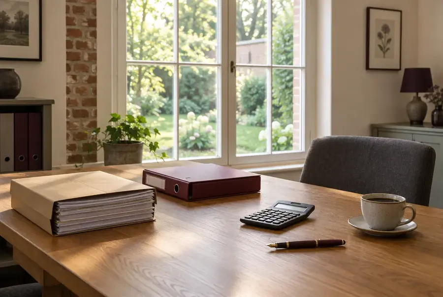
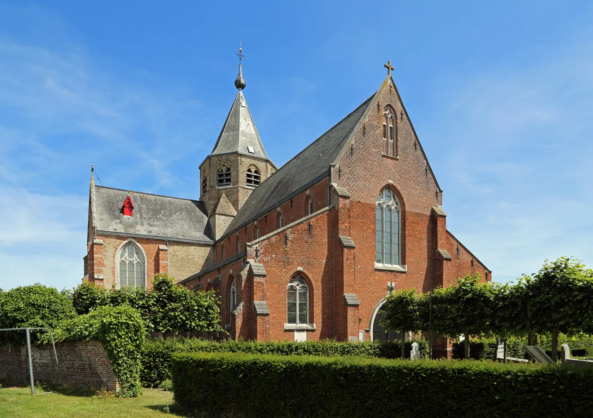
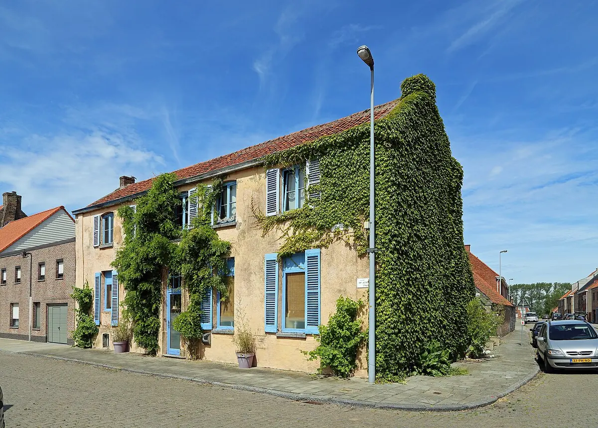
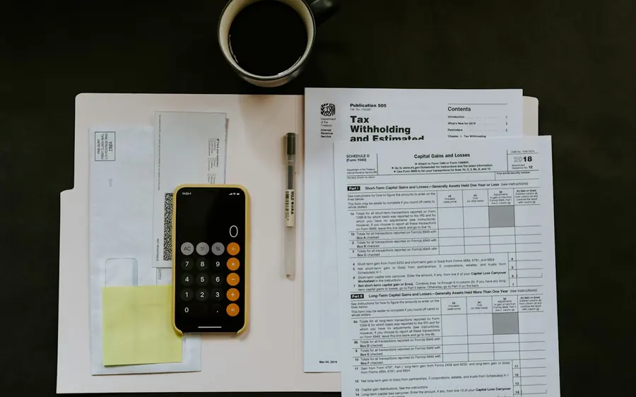
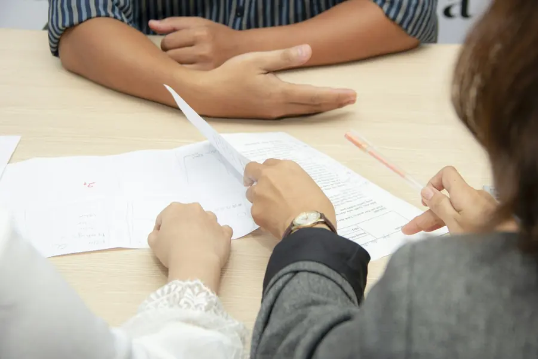
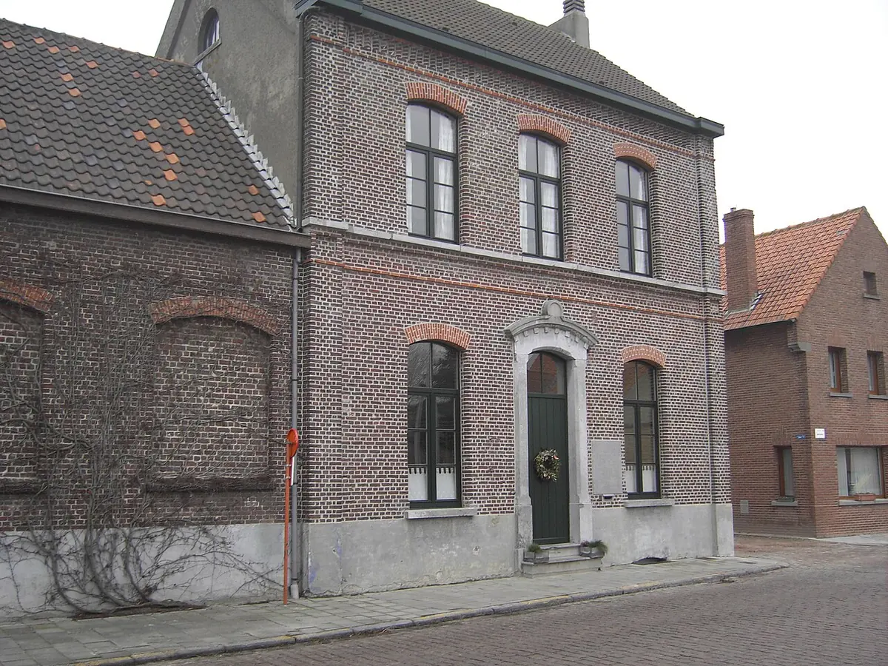
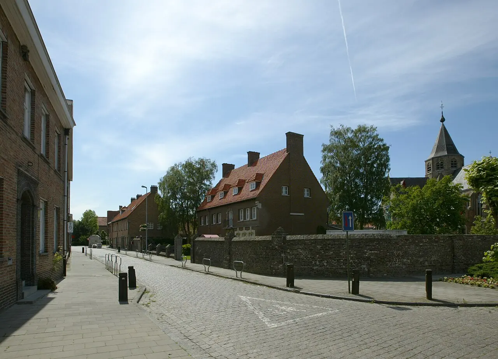
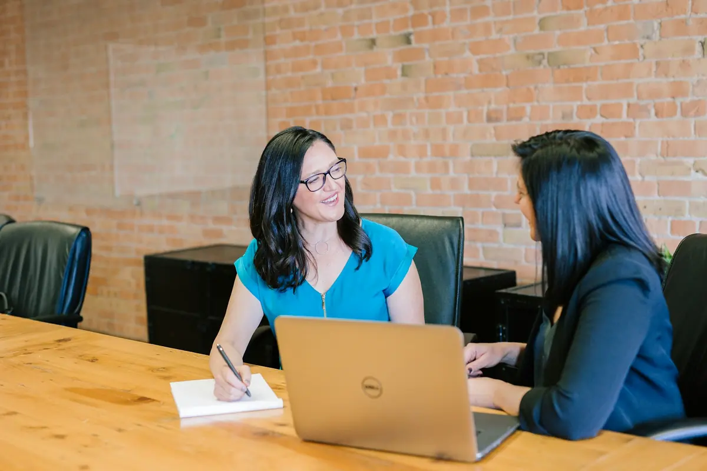
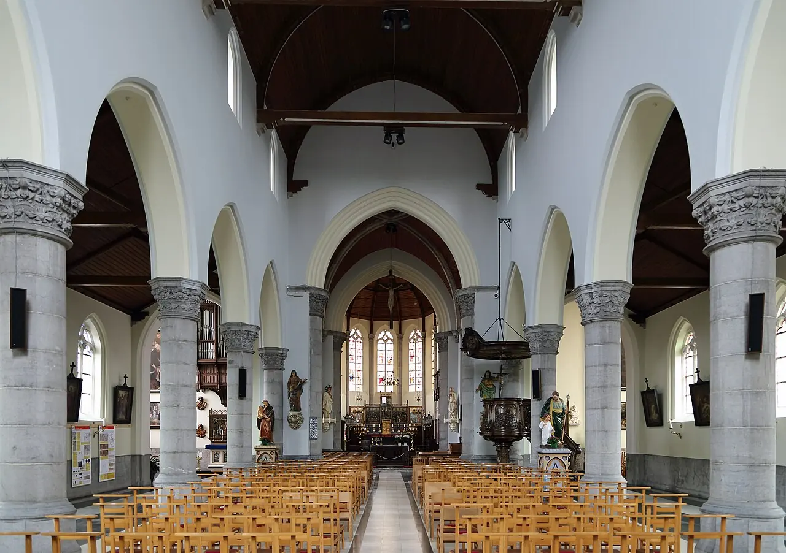

DoorlopendVolledige boekhouding
Aankopen, verkopen en bankverrichtingen netjes verwerkt. Op papier of online, zoals het u het best uitkomt.
Vraag hieroverBoekhouding, btw, jaarrekening en uw aangifte personenbelasting, voor zelfstandigen en vennootschappen uit Middelburg, Maldegem en de dorpen errond. Een klein kantoor, met Christophe Verminck als vast aanspreekpunt.

Sint-Petrus-en-Pauluskerk, Middelburg
Kies wat bij u past. U ziet meteen wat we samen opnemen en welke papieren u best meebrengt naar het eerste gesprek.
Voor de eerste factuur de deur uitgaat, zetten we de basis samen: uw ondernemingsnummer, de juiste btw-regeling en een financieel plan als de bank of de oprichting van een vennootschap daarom vraagt.

Van de eerste btw-aangifte tot de jaarrekening van uw vennootschap. Klik op wat u zoekt, dan staat het al in het contactformulier.

DoorlopendAankopen, verkopen en bankverrichtingen netjes verwerkt. Op papier of online, zoals het u het best uitkomt.
Vraag hierover
Per maand of kwartaalDe periodieke aangifte, de jaarlijkse klantenlisting en de intracommunautaire opgave als u met het buitenland werkt.
Vraag hieroverHet boekjaar afsluiten, de jaarrekening neerleggen bij de Nationale Bank en de aangifte vennootschapsbelasting indienen.
Vraag hieroverUw aangifte inkomstenbelasting, met de aftrekposten waar u recht op hebt. Als zelfstandige of als gezin.
Vraag hieroverEen plan waar de bank mee verder kan, en een begroting die u zelf ook begrijpt. Handig bij een start of een grote investering.
Vraag hierover
Op afspraakEen wagen via de zaak, een grote aankoop of de stap naar een vennootschap. Even rekenen voor u beslist.
Vraag hieroverFiscaal Kantoor Verminck werd opgericht op 17 maart 1995. Het kantoor zit in de Langeweg in Middelburg, net buiten de dorpskern. Zaakvoerder is Christophe Verminck.
Een klein kantoor heeft één groot voordeel: wie belt of mailt, komt meteen terecht bij wie het dossier kent. Geen nummer in een wachtrij, wel iemand die weet hoe uw zaak draait.


Of u nu start of overstapt van een ander kantoor: de eerste stappen zijn telkens dezelfde.


Middelburg werd in de 15de eeuw gesticht door Pieter Bladelin, die de financiën beheerde aan het hof van Filips de Goede. Zijn praalgraf staat nog altijd in de Sint-Petrus-en-Pauluskerk.
Vandaag is het een rustige deelgemeente van Maldegem, tegen de grens met Zeeuws-Vlaanderen. Het kantoor ligt in de Langeweg, net buiten de dorpskern.
Staat uw vraag er niet tussen? Bel gerust naar 050 62 72 24.
Ja. Na een kennismaking wordt uw dossier opgevraagd bij uw vorige boekhouder. Een overstap gebeurt het vlotst aan het begin van een boekjaar of na een afgesloten kwartaal, maar ook tussendoor kan het.
Nee. Een eerste gesprek doet u best aan tafel, daarna kan veel digitaal. Uw facturen kunt u ook online bezorgen.
Verplicht is het niet, maar de keuzes bij de start bepalen veel: welke btw-regeling u kiest, wat u mag inbrengen en wat het betekent voor uw belastingen naast uw loon. Eén gesprek voorkomt vaak dure vergissingen.
Ja, de aangifte inkomstenbelasting hoort bij de diensten van het kantoor. Breng uw laatste aanslagbiljet en de attesten mee die u in de loop van het jaar kreeg.
Bij de oprichting van een vennootschap is een financieel plan verplicht. Ook als u een lening aanvraagt of een grote investering plant, vraagt de bank er vaak naar.
Dat hangt af van de vorm van uw zaak, het aantal facturen en wat u zelf al doet. Na een eerste gesprek weet u waar u aan toe bent.
Ik maakte deze demo voor u om te tonen wat er kan. Na een kort gesprek maak ik er iets veel persoonlijkers van, helemaal naar uw wens.
Vrijblijvend. Ik kom langs of we bellen.
Op maat, op uw eigen domein.
Geen voorschot. U betaalt pas als alles klaar is.
Hosting, domeinnaam en kleine wijzigingen, zoals nieuwe openingsuren.
Omdat een voorbeeld meer zegt dan een mail. Zo ziet u meteen wat er kan, en het kost u niets.
Nee. Het gesprek is vrijblijvend. Vindt u het niks, dan is het daarmee gedaan.
Na ons gesprek staat uw site binnen 10 tot 14 dagen online.
Zeker. Uw domeinnaam kan gewoon blijven, de nieuwe site komt in de plaats van de oude.
Nee, dat doe ik op basis van ons gesprek. Eigen foto's zijn mooi meegenomen, maar niet nodig om te starten.